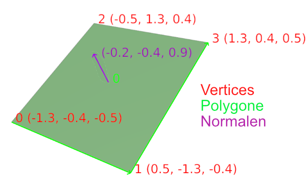
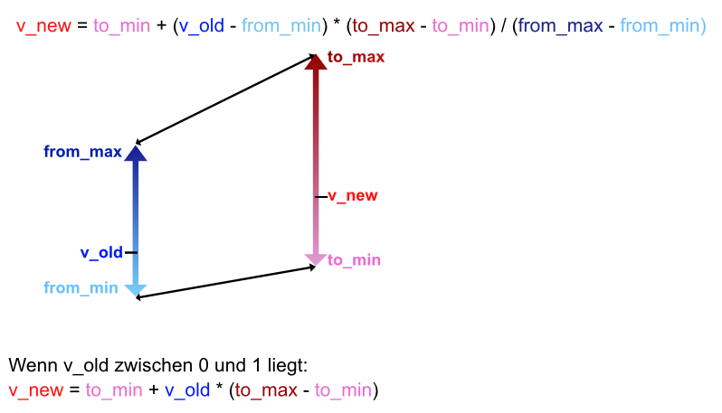

Übung 4 - Meshgenerierung
Basics der Meshgenerierung und -manipulation
Vorbereitung
Aktiviere das vorinstallierte Addon MeasureIt Tols. Dieses erlaubt es uns, Indices, Positionen und andere Infos des selektierten Objekts im Viewport anzuzeigen.
Nach der Installation sind dessen Optionen in der Sidebar (Shortcut N → View → MeasureIt Tools → Mesh Debug) zu finden. Das Addon selbst muss noch mit Show ganz oben im Panel gestartet werden.
Zu den wichtigsten Aufgaben von Addons gehört die Manipulation und Generierung neuer Meshes. Zur Generierung eines Meshes brauchen Programme dabei grundsätzlich drei Arrays an Daten.
Vertices
Diese bestehen aus je drei floats, die die Position eines Punktes im Raum auf der X, Y und Z Achse angeben.
Faces / Polygone
Diese bestehen je aus einer Liste an integern, die die ID der Vertices im Verticearray angeben, die das Polygon aufspannen. Normalerweise spannen je drei oder vier Vertices ein Polygon auf. In Blender sind jedoch auch N-Gons mit beliebig vielen Vertices möglich. Intern wird für die Grafikkarte alles zu Dreiecken umgerechnet.
Normalen
Bestehen aus je drei floats, die für jeden Vertice den (normalisierten) Richtungsvektor angeben, der orthogonal auf der Oberfläche steht. Diesen braucht die Software z.b. zur Berechnung von Lichteigenschaften des Meshes. Normalen werden manchmal auch pro Polygon angegeben und die Normalen der anliegenden Vertices werden intern generiert. Generell lassen Normalen oft automatisch generieren.

Neben diesen essentiellen Daten gibt es noch weitere, von denen hier noch zwei genannt werden sollen:
Edges
Verbindungen zwischen je zwei Vertixes (anhand deren index). Werden meist nicht extra angegeben, da sie durch die Generierung von Polygonen schon impliziert werden.
Texturkoordinaten (UVs)
Wenn das Mesh texturiert werden soll, werden diese benötigt. UVs geben für jeden Vertice zwei floats an, die beschreiben, wo sich dieser Vertixe auf einer zweidimensionalen Textur befinden soll.
Hierfür bietet uns die Blender API zwei Möglichkeiten.
-
Die mesh Schnittstelle erlaubt uns die schnelle Manipulation von Meshes, indem es uns Zugriff auf dessen einzelne Vertices, Edges und Polygone gibt.
-
Das Modul bmesh ist eine weitaus komplexere Bibliothek, die bei komplexeren Mesh-Manipulationen und -Generierungen zum Einsatz kommen sollte.
Vertices 
Die Vertices des Meshes werden in dessen Array vertices gespeichert. Jeder Vertex hat eine co (Coordinates) Variable, die einen Vector mit x,y und z Position des Vertex repräsentiert.
import bpy
currentmesh = bpy.context.object.data
for vert in currentmesh.vertices:
vert.co.z += 1
currentmesh.update()
Um Normalen etc neu zu berechnen, muss das am Ende die update Methode des Meshes aufgerufen werden.
Alleine mit der Manipulation der Vertixpositionen kann schon viel erreicht werden. Hier wurde zum Beispiel einer UV-Sphere ein schraubenartiges Muster gegeben:
import bpy
import math
frequency = 10
amplitude = 0.2
currentmesh = bpy.context.object.data
for vert in currentmesh.vertices:
vert.co.y += amplitude * math.sin(frequency * vert.co.z)
vert.co.x += amplitude * math.cos(frequency * vert.co.z)
currentmesh.update()

Schreibe ein Script, dass einen unterteilten Würfel nach oben hin um 90° verdreht (siehe Bild).
Tipps:
Die Formel für die Rotation eines zweidimensionalen Vectors um den Nullpunkt um den Winkel w ist folgende:
x' = x ⋅ cos(w) - y ⋅ sin(w)
y' = x ⋅ sin(w) + y ⋅ cos(w)Der Drehwinkel muss abhängig von der Höhe ves Vertex sein.

-
Zunächst berechnen wir den Winkel in Radianten, in dem jeder Vertex gedreht wird. Dieser soll abhängig von dessen Höhe z sein. Damit wir unten am Würfel mit 0 beginnen, fügen wir z 1 hinzu (denn der Würfel ist 2 Hoch und hat seine Mitte auf Höhe 1)
angle = math.radians((vert.co.z + 1) * 45) -
Nun rotieren wir jeden Vertex auf der Z-Achse um den Nullpunkt. Z bleibt also unverändert. Die obige Formel in Python sieht folgendermaßen aus:
x = vert.co.x * math.cos(angle) - vert.co.y * math.sin(angle)
y = vert.co.x * math.sin(angle) + vert.co.y * math.cos(angle) -
letztlich weisen wir die so generierten x und y Werte dem Vertex wieder zu
vert.co.x = x
vert.co.y = y
Der ganze Code sieht also so aus:
import bpy
import math
currentmesh = bpy.context.object.data
for vert in currentmesh.vertices:
angle = math.radians((vert.co.z + 1) * 45)
x = vert.co.x * math.cos(angle) - vert.co.y * math.sin(angle)
y = vert.co.x * math.sin(angle) + vert.co.y * math.cos(angle)
vert.co.x = x
vert.co.y = y
currentmesh.update()
Neues Mesh - Pflanzen wachsen lassen
Natürlich können auch komplett neue Meshes generiert werden. Dafür werden wir nun das bmesh Modul verwenden. In diesem Beispiel werden wir eine Graßpflanze erzeugen.
- Zunächst müssen wir sowohl das Mesh, als auch das Objekt erzeugen, dem wir das Mesh als
dataübergeben.
grassblade_mesh = bpy.data.meshes.new("grassblade mesh")
grassblade_object = bpy.data.objects.new("grassblade", grassblade_mesh)
- Um das Objekt nun der Szene hinzuzufügen, verlinken wir es in der aktuell ausgewählten Collection
grassblade_mesh
- Nun kommt das bmesh Modul ins Spiel (importiert es am Anfang der Datei). Wir erzeugen ein neues bmesh anhand des zuvor erstellten Meshes.
bm = bmesh.new()
bm.from_mesh(grassblade_mesh)
Neue Vertices und Polygone lassen sich nun folgendermaßen erzeugen:
myvert_1 = bm.verts.new((0,0,0)) #Erzeugt Vertex an Position 0 0 0
myface = bm.faces.new((myvert_1, myvert_2, myvert_3, myvert_4)) #Erzeugt ein Polygon zwischen den angegebenen Vertices
# um Vertices anhand deren indices anzugeben, muss zuerst folgende Methode aufgerufen werden.
bm.verts.ensure_lookup_table()
myface = bm.faces.new((bm.verts[0], bm.verts[1], bm.verts[2], bm.verts[3]))
Nachdem alle Operationen am Mesh durchgeführt wurden, muss das bmesh wieder zum Mesh konvertiert und anschließend entfernt werden:
bm.to_mesh(grassblade_mesh)
bm.free()
Aufgabe: Graßhalmstruktur erzeugen
Nutzt die oben genannten Möglichkeiten nun, um der Szene ein neues Mesh hinzuzufügen. Dieses soll aus sich nach oben verjüngenden Polygonen bestehen.
Anhand der Parameter
HEIGHT, MIN_WIDTH und MAX_WIDTHsoll das Mesh parametrisierbar sein.Beachtet, dass die Reihenfolge der Vertices eines Faces mit vier Ecken eine wichtige Rolle spielt.
Um einen Wert innerhalb von 0 und 1 (oder anderer Beliebiger Werte) auf einen neue Skala zu bringen kann die map range formel verwendet werden.


Rotation
Um Drehungen von Vertices umzusetzen können wir eine Drehmatrix nutzen. Zur erzeugung dieser können wir das mathutils Modul benutzen. Dabei übergeben wir den Winkel in Radianten, die Größe der Matrix (im 3D Raum 4) und die Achse, um die rotiert werden soll.
rot_angle = 45
rotation_matrix = mathutils.Matrix.Rotation(math.radians(rot_angle), 4, 'X') #
Um die Matrix nun anzuwenden nutzen wir die bmesh.ops.rotate Funktion. Dieser übergeben wir unser bmesh, das Zentrum der Rotation, die Matrix und die Vertices, die rotiert werden sollen.
bmesh.ops.rotate(bm, cent=(0, 0, 0), matrix=rotation_matrix, verts=[v1, v2])
Aufgabe: Graßhalm biegen
Biegt den Graßhalm, indem ihr die Vertices weiter oben stärker rotiert als die unten.
Macht dies mit
ROT_START(Biegung unten am Halm) undROT_END(Bieung oben) Parametern einstellbar.
- Zusatz: Nutzt die
math.powFunktion (Exponentialfunktion), um die Biegung und die Verjüngung des Halms nach oben natürlcher wirken zu lassen.Aufgabe: Graßbüschel-Addon
Erzeugt schließlich einen ganzen Graßbüschel, indem ihr mehrere Graßhalme mit randomisierten Parametern und rotationen um die Z-Achse erzeut.
- Verpackt das ganze letztendlich in einen Operator mit sinnvollen Parametern und macht das Skript als Addon installierbar.